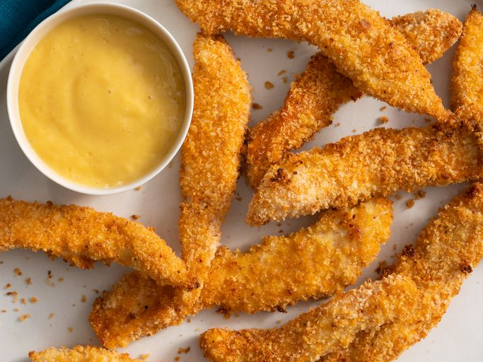

Chicken Tenders

Description:
There are plenty of reasons to make baked chicken tenders instead of breaking out your deep fryer:
They require a lot less oil than their deep-fried counterparts, which makes them a lighter alternative.
Plus, this oven-baked method is incredibly easy (not to mention it makes cleanup a breeze).
Ingredients:
- cooking spray
- 1 large egg, beaten
- 1 1/4 cups panko bread crumbs
- 2 teaspoon garlic powder
- 1 teaspoon ground paprika
- 1 teaspoon onion powder
- 1 teaspoon kosher salt
- 1 teaspoon ground black pepper
- 4 skinless,boneless chicken tenders, cut into 1/2-inch strips lengthwise